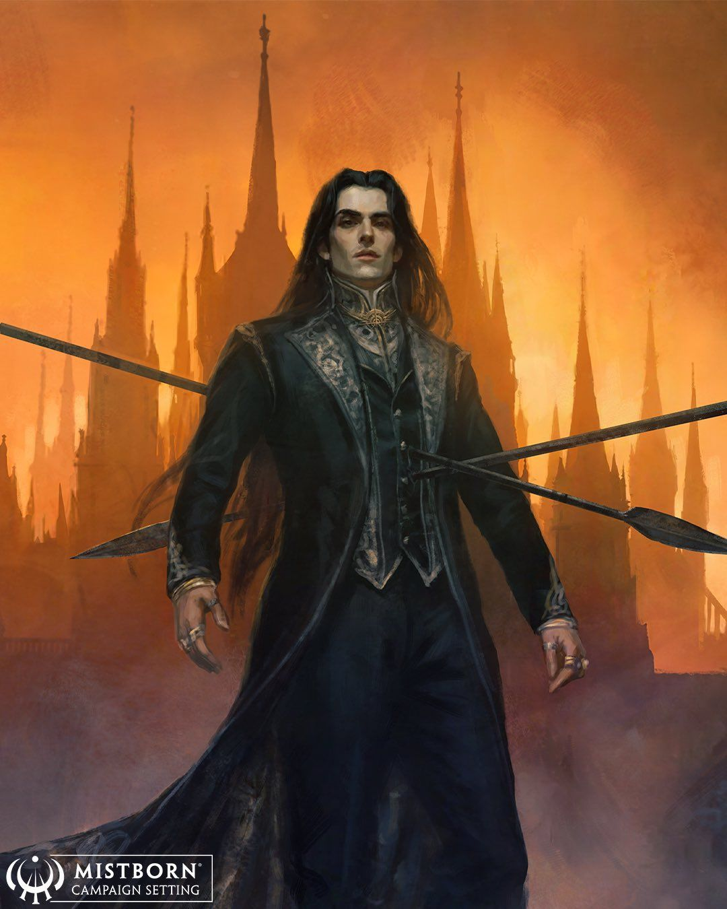
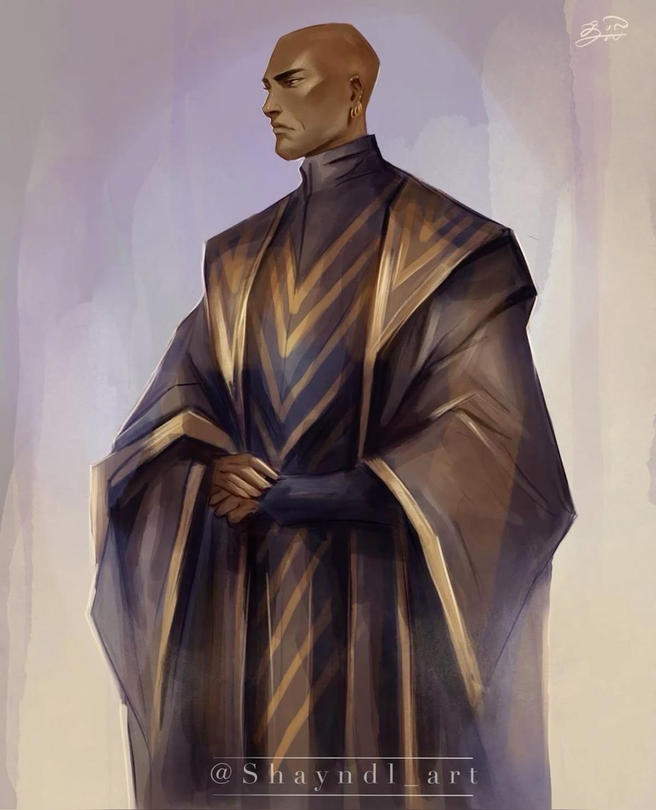
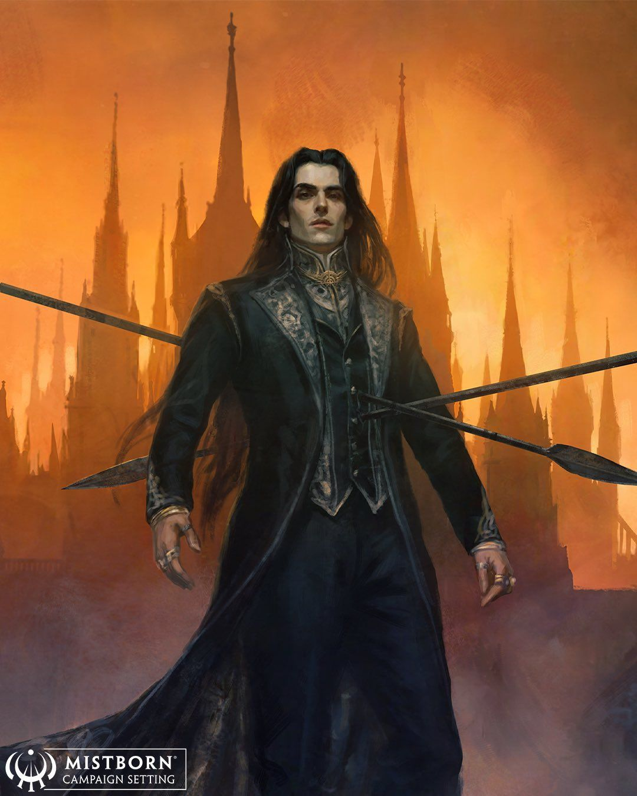
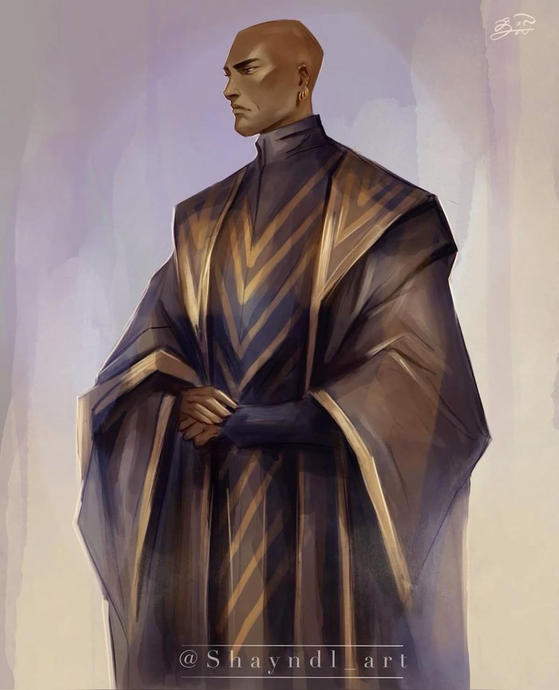
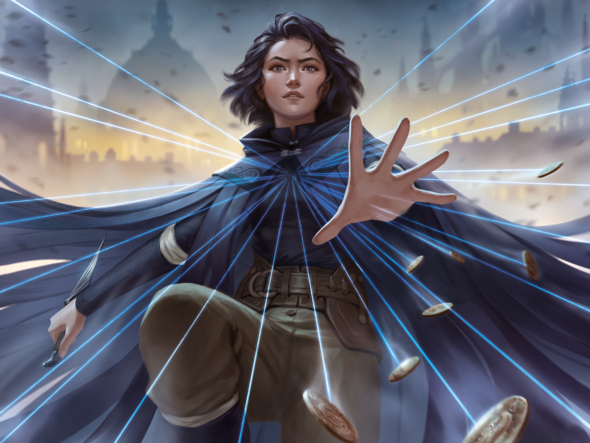

Choose Your Character


 




VIN
Vin Venture is a half-skaa Mistborn from the Final Empire on Scadrial. She later becomes known as Heir to the Survivor, the Ascendant Warrior and the Lady Mistborn, as well as taking on the alias Valette Renoux.
MISTBORNTHE FINAL EMPIRE
Mistborn: The Final Empire, also known simply as Mistborn or The Final Empire, is a fantasy novel written by American author Brandon Sanderson. It was published on July 17, 2006, by Tor Books and is the first novel in the Mistborn trilogy, followed by The Well of Ascension in 2007 and The Hero of Ages in 2008.